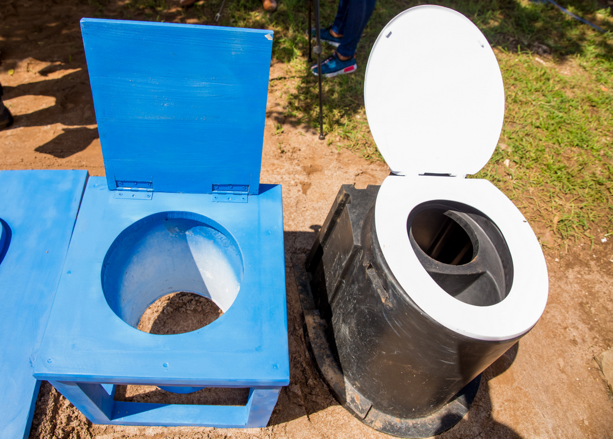

DRY
Dry toilets do not use water to move human waste to concrete rings. On the contrary, the slab is directly connected to the ring cover and it allows excreta to go straight in the pit.
Since September, 2017, TEMACO piloted a new project of EcoTeto or Ecological TEMACO Toilet obtain from a reverse engineering of the combination of basic slab toilet, Sato, and Safi technology. TeTo has been developed based on The National Sanitation Policy and Implementation Strategy Criteria. It is an improved, smart, and affordable latrine which is now in partnership with USAID funded project ISUKU IWACU. This project will especially operate in rural area districts by targeting the bottom of pyramid households and disabled people.
EcoTeto or Ecological Temaco Toilet is an improved latrine which is in turn a defection facility that:
EcoTeto is environmental friendly in such that it protects and conserves water because it reuses water from bathrooms. This latrine can be constructed (used) in cities, towns as well as villages and it has an added advantage of not requiring deep digs. This makes EcoTeto better especially in Northern and Western regions of Rwanda where one cannot dig a hole greater than one metre because of volcanic rocks. EcoTeto is also preferable to regions with underground water located in few metres like Nyanza district.
Dry toilets do not use water to move human waste to concrete rings. On the contrary, the slab is directly connected to the ring cover and it allows excreta to go straight in the pit.
Wet toilets have a pipe connecting concrete the ring with the slab. This type of latrine uses water to move feces from the squirting pan to the concrete ring.
The project also considers a group of old and disabled people who cannot easily use the normal toilets. To handle this issue, a toilet chair was made. This chair is not fixed on the slab, but can be used on any type of the toilet by simply placing it on the top of the slab.
